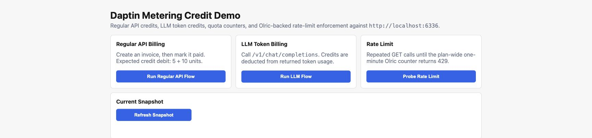

$ daptin-cli describe action integration install_integrationInspect an action’s instance requirements and input fields before executing it.
Open source · Self-hosted · LGPL-3.0
Daptin reads table definitions from YAML or JSON and creates JSON:API routes for their records. It also supplies users, permissions, file uploads, server-side actions, integrations, and WebSocket events.
Go binary · SQLite, MySQL, or PostgreSQL · self-hosted
Tables:
- TableName: product
Columns:
- Name: title
DataType: varchar(200)
- Name: price
DataType: float$ docker run --rm -p 127.0.0.1:6336:8080 daptin/daptin:v0.12.36
Open localhost:6336 →
Call JSON:API routes directly, use the CLI, or install the JavaScript or Go client. All three can read records and run actions.
Explore developer tools →$ daptin-cli describe action integration install_integrationInspect an action’s instance requirements and input fields before executing it.
> await client.jsonApi.findAll<Product>('product')Use typed entities, JSON:API, actions, authentication, and direct storage uploads.
> new OpenAI({ baseURL: 'http://localhost:6336/v1' })Point the official client at Daptin and map model names to configured providers.
For each table, Daptin creates routes to read and change records, checks which users and groups may use them, publishes record changes, and lists the table in its web dashboard.
Read about tables and relationships →Create, read, update, and delete records through JSON:API. Filter, sort, paginate, include relationships, aggregate values, or enable GraphQL.
Explore APIs →Users, groups, ownership, JWT and OTP flows, plus table, row, relation, and action-level access control.
Read the permissions guide →Define input fields and ordered server-side steps, then call the action through HTTP or run it on a cron schedule.
Read the actions guide →Attach files to records, save them locally or through rclone, and serve websites by host name or path.
Read the file storage guide →Publish record changes over WebSockets, edit selected fields with YJS, and enable FTP, SMTP, or IMAP services.
Read the WebSocket guide →Import OpenAPI operations as actions and route OpenAI-compatible requests across configured LLM providers.
Read the integrations guide →Define tables, columns, relationships, validation, and table settings in YAML or JSON.
Create users and groups, set record permissions, and enable the actions, storage, integrations, and protocols you need.
Run one binary with health checks, TLS, audit logs, caching, clustering, and graceful shutdown.
Actions and file uploads refer to the same records exposed by the API. Record permissions also apply when Daptin runs an action or publishes an event.
Browse all server features →The metering UI below comes from the current demo repository. The schema, API routes, CLI commands, releases, and issue history are public.

TableName: product Columns: - Name: name DataType: varchar(200) # available after startup GET /api/product POST /api/product PATCH /api/product/{reference_id} # discover the running model daptin-cli list world daptin-cli describe action world import_data
Each repository includes setup instructions and exercises its flow against Daptin.
Chat, streaming, models, completions, embeddings, usage, and structured errors through Daptin’s /v1 routes.
Registers a client, signs in with authorization code and PKCE, exchanges the code for tokens, and calls the userinfo endpoint.
Inspect the demo ↗ API METERINGRecords API and LLM calls, rejects calls after a quota is reached, and debits a credit wallet after each metered call.
Inspect the demo ↗ STORED CREDENTIALSStores OAuth and custom credentials for each user and verifies that one user cannot call an integration with another user’s credentials.
Inspect the demo ↗Teams use Daptin as a primary application server or add a specific API, file, integration, metering, or realtime service to an existing stack.
Install the CLI, use the JavaScript or Go clients, start from a schema package, or inspect an application repository.
Explore the ecosystem →Run Daptin as a single Go binary, choose SQLite for local work or MySQL/PostgreSQL for production, and keep your application data on infrastructure you control.